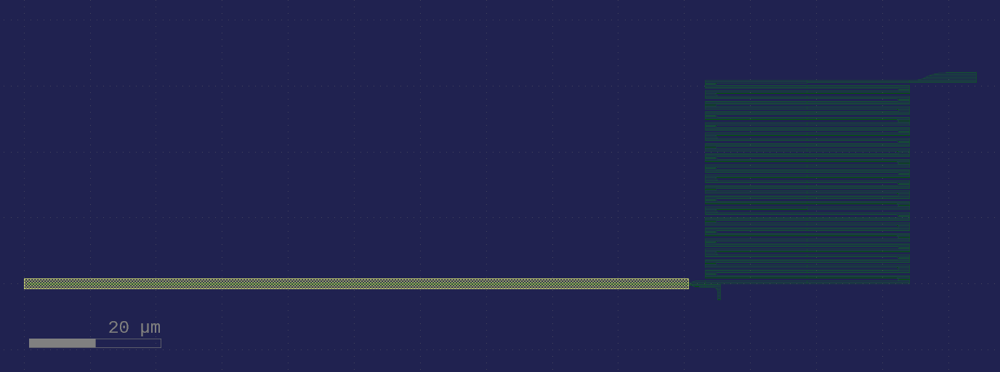

Waveguide integrated SNSPD¶
Description¶
SNSPD is a superconducting nanowire single-photon detector. This device is waveguide coupled meaning it detects photons traveling in the silicon waveguide. A similar device with SiN waveguides was shown in [Sha16] and [SBN+17].

Characteristics¶
The response on SiN measured in [Sha16] is shown here. Response saturation was observed. Characterization on the SOI platform is still in progress.
Layout¶

Fig. 5 The layout produced by the below code.¶
def wg_to_snspd(wgnw_width=0.1, wgnw_length=100, wgnw_gap=0.15,
num_squares=5000.0, meander_width=0.4, meander_fill_factor=0.5,
wg_width=0.75):
''' Waveguide coupled to SNSPD with inductor (meander).
The length and width of the meander are chosen so that it is approximately square
Args:
meander_width (float): nanowire width within meander inductor
num_squares (float): total squares in meander and out-and-back
wgnw_width (float): width of out-and-back nanowire
wgnw_length (float): length of out-and-back
wgnw_gap (float): spacing between the out-and-back wires
wg_width (float): waveguide width
Ports:
el_1: wiring port
el_gnd: wiring port
wg_in: input optical port
de_edge: edge of explicit waveguide on the SNSPD side
'''
D = Device('wg_to_snspd')
# Calculations and checks
numsquares_wgnw = 2 * wgnw_length / wgnw_width
numsquares_meander = num_squares - numsquares_wgnw
if numsquares_meander < 1000:
print('Warning: Not enough squares in SNSPD meander. Clipped to 1000 from {:.1f}'.format(numsquares_meander))
numsquares_meander=1000
meander_pitch = meander_width / meander_fill_factor
meander_length = np.sqrt(numsquares_meander * meander_width * meander_pitch)
wgnw_pitch = wgnw_width + wgnw_gap
wgnw_distance_to_edge = wg_width / 2 - wgnw_width - wgnw_gap / 2
if wgnw_distance_to_edge < 0:
print('Warning: nanowire will overhang side of waveguide by {:.3f} um'.format(-wgnw_distance_to_edge))
numsquares_per_taper = 3 # approximate
D.info['num_squares'] = numsquares_meander + numsquares_wgnw - meander_length/meander_width + 3*numsquares_per_taper
# D.info['expected_resistance'] = D.info['num_squares']*EXPECTED_RSQ_WSI
D.info['wire_width'] = wgnw_width
D.info['length']= wgnw_length
# Geometry
meander = D << pg.snspd(wire_width=meander_width, wire_pitch=meander_pitch,
terminals_same_side=False, size=(meander_length,None),
num_squares=numsquares_meander, layer=lys['m2_nw'])
meander.reflect(p1=(0,0), p2=(1,0))
Taper = pg.optimal_step(start_width=wgnw_width, end_width=meander_width,
num_pts=50, width_tol=1e-3, anticrowding_factor=1.2,
layer=lys['m2_nw'])
taper1 = D << Taper
taper1.connect(2, meander.ports[1])
wgnw = D << pg.optimal_hairpin(width=wgnw_width, pitch=wgnw_pitch, length=wgnw_length,
layer=lys['m2_nw'])
wgnw.connect(2, taper1.ports[1])
taper2 = D << Taper
taper2.reflect()
taper2.connect(1, wgnw.ports[1])
# Electrical ports
exit_bend = D << pg.optimal_90deg(width=meander_width, num_pts=15,
length_adjust=1, layer=lys['m2_nw'])
exit_bend.connect(port=2, destination=taper2.ports[2])
D.add_port('el_gnd', port=exit_bend.ports[1])
exit_taper = D << pg.optimal_step(start_width=meander_width, end_width=meander_width*4,
num_pts=50, width_tol=1e-3, anticrowding_factor=1.2,
layer=lys['m2_nw'])
exit_taper.connect(1, meander.ports[2])
D.add_port('el_1', port=exit_taper.ports[2])
# Waveguide and optical ports
wg = D << pg.compass(size = [wgnw_length + wgnw_distance_to_edge, wg_width], layer = lys['wg_deep'])
wg.xmax = wgnw.xmax
wg.y = wgnw.y
D.add_port('de_edge', port=wg.ports['E'])
D.add_port('wg_in', port=wg.ports['W'])
D.ports['de_edge'].info['is_waveguide_edge'] = True
pos = D.ports['wg_in'].midpoint
D.move(-1*pos)
return D